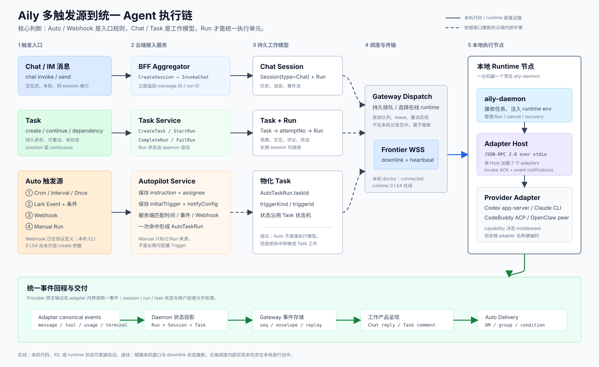

Auto 保存 instruction、assignee、Trigger 与投递策略。一次命中产生 AutoTaskRun.taskId，随后走 Task 执行链。
Executive summary
先把四个概念拆开
多数架构争论来自把“谁触发”“产生什么工作”“在哪里执行”“结果发给谁”混在同一层。Aily 的实现已经把这些维度拆开。
Chat 面向低延迟多轮交互；Task 面向持久异步工作、依赖、继续执行与重试。二者最终都收敛为 Run。
云端经 WSS 下发 daemon，daemon 再经 stdio JSON-RPC 调 Adapter Host。改成本地 stdio 或远端 WSS，不应改变 Chat / Task 领域语义。
TriggerSource → TriggerEnvelope → Chat | Task → Run → RuntimeRoute → Adapter → Canonical Events → Delivery
End-to-end view
多入口，一条执行主干
图中实线是本机发行包或 runtime 状态可直接验证的部分；虚线是由公开接口形状和 downlink 状态推断的云端内部步骤。

Trigger Source
Chat 消息、Task 操作、Scheduler、Lark Event、Webhook、Manual。回答“为什么现在执行”。
Work Container
Chat Session 或 Task。回答“这项工作如何持久、继续、协作和展示”。
Run / Invocation
一次可排队、取消、终态化的执行。Run 属于产品域，Invocation 属于 runtime 调用域。
Delivery Plan
Chat reply、Task comment/status、Auto DM/group/condition。回答“结果由谁、向哪里交付”。
Trigger walkthrough
不同触发方式的真实链路
选择入口查看它如何创建工作、如何下发，以及终态在哪里形成。这里刻意不把 Webhook 当成新的 Session 类型。
| 入口 | 匹配位置 | 物化对象 | 手动触发 | 主要交付 | 本机证据 |
|---|---|---|---|---|---|
| Chat / IM | BFF / IM ingress | Chat Session + Run | 直接 invoke / send | Session events / 回复 | 已验证 |
| Task | Task Service | Task + Run | create / continue | 状态、评论、交互 | 已验证 |
| Auto Scheduler | Autopilot 服务端 | AutoTaskRun → Task | 允许 auto run | DM / 群 / 条件投递 | 已验证 |
| Lark Event | 飞书事件管线 + 条件 DSL | AutoTaskRun → Task | 不允许合成 payload | DM / 群 / 条件投递 | 已验证 |
| Webhook | Autopilot Webhook ingress | 推断为 AutoTaskRun → Task | 独立 HTTP 调用 | 沿 Auto notifyConfig | 接口可见 |
| Manual Auto | RunAuto | 返回 taskId | Scheduler Auto only | 沿 Auto notifyConfig | 已验证 |
Command policy
Surface 到底是什么
AILY_CLI_SURFACE 是命令注册与暴露策略，不是 UI 类型、Transport 类型，也不是 adapter capability。
full宿主 / 管理面
- 包含 daemon、adapter、doctor、chat、auth 等本机管理和直接调试命令。
- 允许外部 command plugins；适合人类终端、宿主进程和运维诊断。
chat属于 full，因为它是外部控制客户端，不是给正在运行的 Agent 自己调用的工具。
agent-liteAgent 工具面
- 暴露 task、auto、session、deliver、user-context 等受控业务命令。
- 每个可执行命令必须声明
risk、stableOutput和requires。 - 过滤 full-only 命令和外部 command plugins，缩小 Agent 可调用面。
关键边界：Surface 决定“CLI 中哪些方法可见”；Capability 决定“某 adapter 能否实现某行为”；Transport 决定“消息从哪里到哪里”。三者不能合并成同一个枚举。
Runtime0.1.54
DaemonRunning
Gateway WSSConnected
Loaded adapters7
Gap analysis
Aily 与 Octo Harness 当前差异
Octo Harness 的领域骨架已经接近正确答案：Trigger → Occurrence → Task → Attempt → Run，Chat 直接形成 Run。差距集中在企业控制面和高可用执行面。
| 能力 | Aily 本机可见设计 | Octo Harness 当前实现 | 方案判断 |
|---|---|---|---|
| Chat / Task 建模 | SessionType=Chat/Task；两类 Run 状态机 | Session(chat/task)、Task、Attempt、Run 已分离 | 基本一致 |
| Auto 物化 | Trigger 命中形成带 taskId 的 AutoTaskRun | TriggerOccurrence 原子创建 Task + task Session | 方向正确 |
| Scheduler | 云端 cron / interval / once，支持 idle pre-exec | daemon 进程内 setInterval | 需服务化 |
| Event / Webhook | Lark event DSL、文件过滤；Webhook 协议含 URL / method / secret / IP | 调用方直接 ingestEvent，简单字段相等过滤 | 缺 ingress |
| 远端 Runtime | Gateway WSS、runtime heartbeat、downlink | 单机 socket / 进程内 daemon | 需 Runtime Gateway |
| Adapter Host | 单 Host 多 adapter；stdio JSON-RPC；heartbeat / invoke stream / cancel | Host + registry + NDJSON RPC，机制较轻 | 可演进复用 |
| 幂等与恢复 | 服务端任务与 Run、runtime 状态；具体 queue/lease 未包含在本机包 | triggerId:externalEventId 去重；单 writer JSON store | 需 DB + outbox |
| 投递平面 | Chat reply、Task 状态/评论、Auto notifyConfig；自环保护 | 只有 canonical events，无收件人/条件/渠道路由 | 需独立 Delivery |
| 命令治理 | Surface + risk + stableOutput + requires | CLI 未建立细粒度 command policy | 需方法策略层 |
Target architecture
建议的 Octo Harness 统一 Blueprint
坚持“一个执行核心、两种工作容器、多种 Trigger Adapter、独立 Delivery Plane”。Buddy 类产品和本地 Codex 类产品只在入口、Transport 和 Surface 策略上不同。
1. Edge / Gateway
接收 UI、IM、OpenAPI、Webhook；完成用户身份、租户、速率限制和 request id。UI 远端走 HTTPS/WSS，本地控制器可走 stdio/socket。
2. Trigger Service
Scheduler、Lark Event、Webhook、Manual 都实现同一 TriggerAdapter，输出规范化 TriggerEnvelope，不直接调用模型。
3. Work Orchestrator
Chat 输入创建 Chat Run；Auto/Event/Webhook 创建 Task，再创建 Attempt/Run。用数据库事务和 outbox 保证“命中”和“排队”一致。
4. Runtime Router
根据 agent binding、runtime 在线状态、能力、数据位置和负载选择节点。下发必须携带 lease epoch / fencing token。
5. Daemon + Adapter Host
Daemon 管理本机资源和 invocation；Host 通过稳定 JSON-RPC 驱动多个 adapter；adapter capability 决定 session、tool、skill、append 等中间件。
6. Event + Delivery
事件先进入持久 event log，再由 Chat、Task、IM、Auto delivery projector 消费。投递失败不能回滚已完成的 Run。
{
"eventId": "evt_01J...", // 全局幂等键
"source": { "kind": "webhook", "triggerId": "trg_..." },
"actor": { "type": "user|system|agent", "id": "..." },
"scope": { "tenantId": "...", "workspaceId": "..." },
"target": { "workKind": "task", "agentId": "..." },
"payloadRef": "blob://encrypted/...", // 大 payload 不直接进队列
"deliveryContext": { "channel": "im", "sessionId": "..." },
"traceId": "trace_...",
"occurredAtMs": 1788067200000
}Delivery plan
建议落地顺序
先锁定领域边界，再引入网络和 HA。直接从 WSS 开始，会把触发、执行、投递三类问题同时带进 daemon。
契约收敛
定义 TriggerEnvelope、WorkKind、Run、Invocation、DeliveryPlan；补 command surface 与 capability 校验。
Runtime Gateway
实现 runtime registry、WSS 双向 JSON-RPC、ACK/replay、heartbeat、断线重连和节点 draining。
Trigger Service
把 interval 迁出 daemon；增加 cron、Webhook 签名/IP/重放防护、事件订阅和原子物化。
HA 与交付
事务 DB、outbox、lease/fencing、DLQ、重试预算、审计日志、条件投递和多渠道 projector。
Decision request
本次评审建议拍板的事项
这些决策一旦统一，后续 Buddy、IM Agent、本地 Codex 和远端 Runtime 可以共享同一套 blueprint，而不需要复制业务调度。
建议批准
- Auto / Event / Webhook 一律物化 Task，不新增 Auto Session 或 Webhook Run。
- Chat 直接创建 Session Run，保持低延迟与多轮历史语义。
- Run 与 Invocation 分离：Run 可重试，Invocation 是一次 runtime 尝试。
- Transport 可替换：本地 stdio/socket 与远端 WSS 共用领域契约。
- Delivery 独立：执行完成不等于用户已收到，二者分别终态化。
暂不冒充已验证
- Aily 云端内部具体使用何种消息队列、lease、fencing 与 outbox，本机发行包没有源码证据。
- Webhook Trigger 已出现在 Gateway API 类型中，但 Aily CLI 0.1.54 的
auto create只开放 cron / interval / event。 - Octo Harness 当前 JSON Store 和进程内 timer 是 reference model，不能直接作为生产 HA 结论。
Evidence index
证据来源与可信边界
报告没有把本机看不到的云端实现写成事实。代码、IDL 与运行状态用于验证对外行为；内部队列步骤只做架构推断。
~/.aily-cli/current/js/dist/commands/chat.jsCreateSession / InvokeChat、fire-and-forget、session events。~/.aily-cli/current/js/dist/commands/task/index.jsTask Run 状态由 daemon 围绕 worker 生命周期驱动。~/.aily-cli/current/js/dist/commands/auto/create.jsAuto + initialTrigger、Scheduler/Lark Event、notifyConfig。~/.aily-cli/current/js/dist/commands/auto/run.jsManual Run 仅允许 cron / interval，event 不合成 payload。~/.aily-cli/current/js/node_modules/@lark-harness/gateway-api/dist/__apis.d.tsTriggerKind、WebhookTriggerSpec、AutoTaskRun.taskId、SessionType。~/.aily-cli/current/js/dist/command-surface.jsfull / agent-lite 过滤和 risk / stableOutput / requires 校验。~/.aily-cli/current/js/node_modules/@lark-harness/adapter-host/dist/protocol.d.tsdaemon ↔ Host 的 stdio JSON-RPC 方法与 event notifications。aily-cli doctor --json / daemon status --jsonWSS connected、runtime 在线、Host READY、7 adapters。octo-harness/packages/octo-harness-core/src/engine.tsTrigger → Occurrence → Task → Attempt → Run 与 Chat Run。octo-harness/packages/octo-harness-daemon/src/index.ts当前单机 interval、event ingest、快速 ACK 和后台执行。